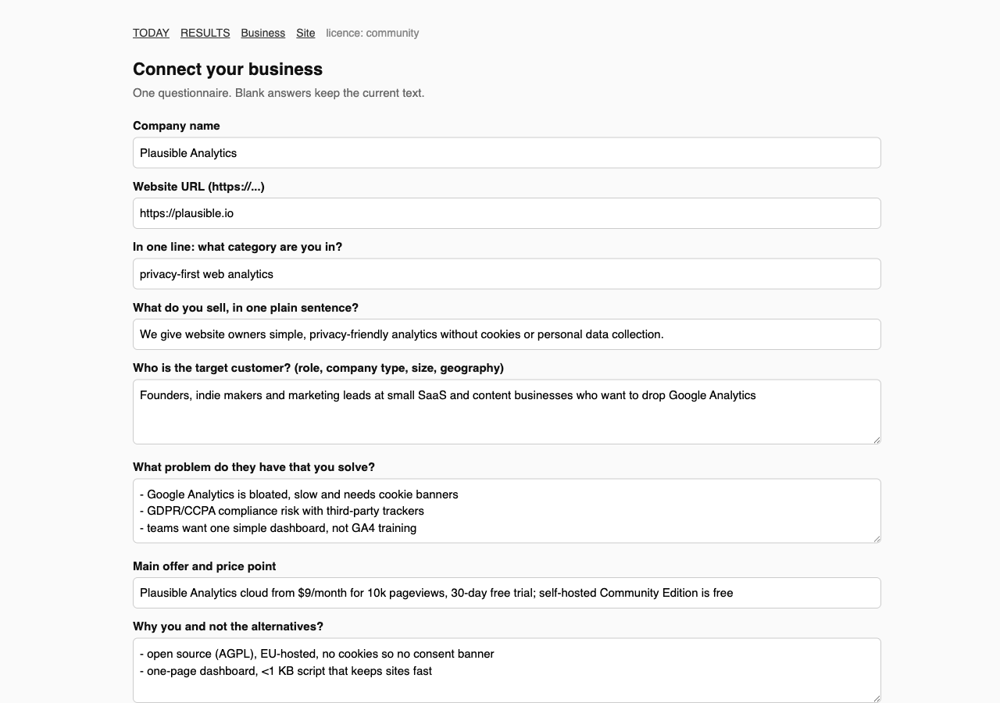
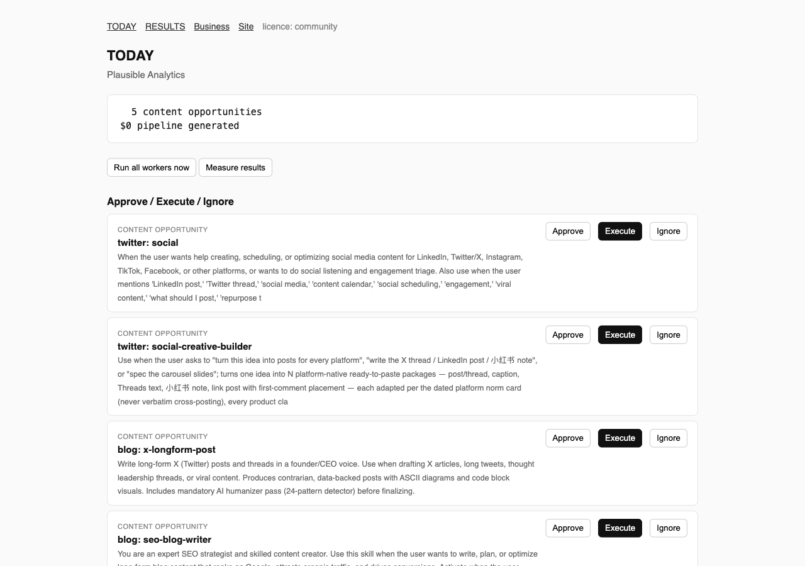
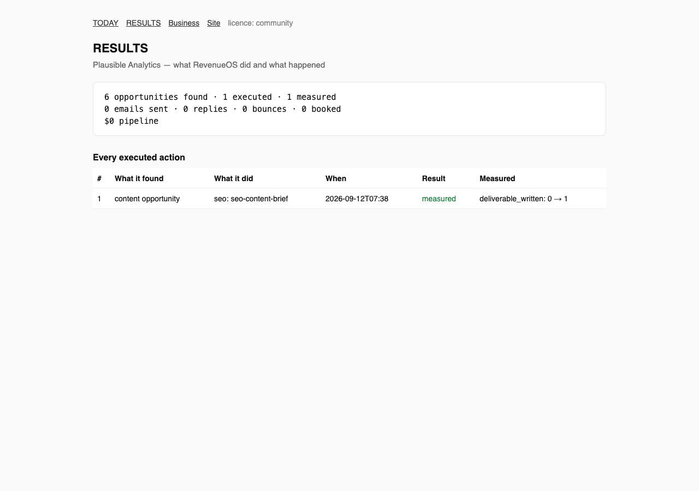

What RevenueOS actually did, once
This is the unedited record of a single run: what was found, what was executed, and what was measured, against a real company's public web presence. Nothing here is a mock-up or a projection.
The brief and the ledger
Screenshots of the actual control-panel screens from this run.



The full command transcript
Every command run in this session, in order, with its actual output. Nothing has been trimmed except the workspace path.
$ revenueos workspace new <dir> workspace ready: <dir> $ revenueos --root <dir> init --answers demo-answers.json Onboarded Plausible Analytics. Config: revenueos.yaml; canon: company-context/. company-context validates. $ revenueos --root <dir> run seo # real crawl of plausible.io + free authority endpoint ok seo 0 SEO opportunity(ies) from 12 crawled pages, 0 crawl findings, authority unavailable (HTTP 403). $ revenueos --root <dir> run monitor # real Hacker News search + Claude relevance gate [info] relevance_gate candidates=3 source='Hacker News' surfaced=0 ok monitor 0 new market signal(s), 0 relevant HN thread(s) after the Claude relevance gate (default-reject). $ revenueos --root <dir> run content # registry match: channels seo, blog, twitter ok content 6 content opportunity(ies) for channels seo, blog, twitter (week 2026-W37). $ revenueos --root <dir> today TODAY — Plausible Analytics 6 content opportunities $0 pipeline generated [ 6] content_opportunity twitter: social [ 5] content_opportunity twitter: social-creative-builder [ 4] content_opportunity blog: x-longform-post [ 3] content_opportunity blog: seo-blog-writer [ 2] content_opportunity seo: seo-content-strategy [ 1] content_opportunity seo: seo-content-brief $ revenueos --root <dir> approve 1 approved [1] seo: seo-content-brief $ revenueos --root <dir> execute 1 # Claude runs the vendored seo-content-brief skill executed [1] seo: seo-content-brief deliverable written to data/outputs/20260912-seo-content-brief-1.md (14,014 bytes, 1m23s wall clock) $ revenueos --root <dir> run measure ok measure 1 result(s) measured, 0 still pending. $ revenueos --root <dir> results RESULTS — Plausible Analytics 6 opportunities found · 1 executed · 1 measured 0 emails sent · 0 replies · 0 bounces · 0 booked · $0 pipeline ✓ [ 1] seo: seo-content-brief deliverable_written 0 → 1
The deliverable is a full SEO content brief targeting the query "google analytics alternative" (working title, funnel stage, query cluster, outline, CTAs), grounded only in the onboarding answers and labelled user-provided / estimated per the vendored skill's own truth rules.
The same loop over HTTP
The control panel was started with a password set and exercised the same actions over its HTTP surface.
| Request | Result |
|---|---|
GET /health | {"ok": true, "service": "revenueos-panel", "onboarded": true} |
GET /site/ and /site/pricing.html | 200 (marketing site, 19.5 KB) |
GET /billing/checkout?tier=pro | 400 STRIPE_SECRET_KEY is not set (correct without vendor keys) |
GET /results unauthenticated | 401 |
POST /login + GET /results | 1 executed · 1 measured, deliverable_written: 0 → 1 |
GET /api/today | {"found": 6, "executed": 1, "measured": 1, ...} |
What's honest about these numbers
- ✓Opportunity quality. The crawl found nothing wrong with plausible.io — every page has a title, description and more than 300 characters of body text, and a sitemap is present. The free authority-comparison endpoint the SEO worker relies on now returns HTTP 403, so the authority comparison is reported as unavailable rather than guessed. The Claude relevance gate rejected all three Hacker News candidates it considered. The six content opportunities are the genuine output of the run.
- ✓Measurement.
deliverable_written 0 → 1is what RevenueOS can observe for a content action without Search Console connected. The other measurement paths exist and are covered by tests against real state changes:meta_description_fixed(re-crawl),replied(inbox worker over IMAP/.eml),campaign_spend_delta(next ad export). - ✓Pipeline.
$0 pipelineis true: no lead was contacted. The pipeline number moves when the outreach loop runs with a real mailbox (SMTP/IMAP credentials), which this machine does not have. That path is tested end to end with a dry-run sender and .eml replies. - ✓Cost. One Claude execution of a skill cost roughly $0.20–$0.50 in API-equivalent tokens for this run.
Reproduce it
uv sync --extra dev && (cd orchestrator && npm install)
revenueos workspace new /tmp/ros-demo
revenueos --root /tmp/ros-demo init # or --answers file.json
revenueos --root /tmp/ros-demo run all && revenueos --root /tmp/ros-demo today
revenueos --root /tmp/ros-demo approve <id> && revenueos --root /tmp/ros-demo execute <id>
revenueos --root /tmp/ros-demo run measure && revenueos --root /tmp/ros-demo results